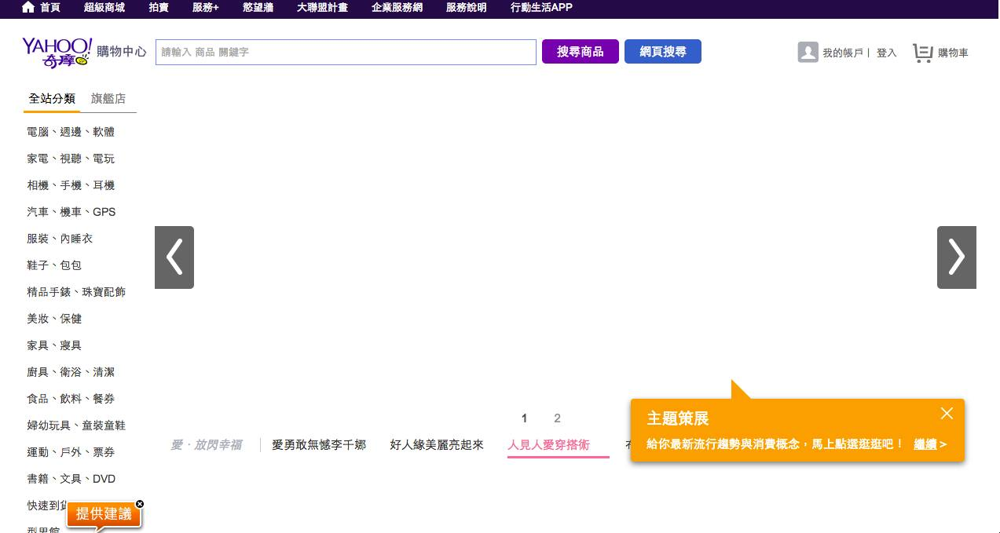

class: middle, center #網頁前端工程師與室內裝修師傅的相似之處 .right[Vexed] --- #自我介紹 ##蔡秉諺 Vexed 米蟲 ###2001.9 - 2007.7 中正資工 ###2007.10 - 2013.9 中華電信 ###2013.9 - 現在 Yahoo Search --- #大綱 ##什麼是網頁前端？ ##我的網頁前端之路 ##網頁前端產業現況 --- class: middle, center #什麼是網頁前端？ --- ##工作流程 ###PM 開<a href="http://en.wikipedia.org/wiki/Website_wireframe#mediaviewer/File:Profilewireframe.png" target="_blank" >需求</a>給 UED 和 BE ###BE 依需求提供 <a href="https://graph.facebook.com/pingyen.tsai" target="_blank" >API</a> ###UED 依需求提供 <a href="http://tw.yahoo.com" target="_blank" >Mockup</a> 與素材 ###FE 依 Mockup 組合素材與 API 建置網頁 <fieldset style="width : 360px" > <ul> <li>PM - Product Manager</li> <li>UED - User Experience Designer</li> <li>BE - Back-end Engineer</li> <li>FE - Front-end Engineer</li> </ul> </fieldset> <a href="http://www.imdb.com/title/tt0454876/" target="_blank" ></a> --- ##將 Mockup 翻譯成 HTML CSS JavaScript ###做不做得到 ###怎麼做 ###如果做不到 為什麼 ###持續與 PM UED BE 溝通 --- ##基本技能 ###HTML CSS JavaScript ###瀏覽器 ###Server-side Language <img src="images/CSS.gif" style="width : 400px; position : absolute; top : 240px; right : 80px" > --- ##溝通 協調 ###做不做得到 怎麼做 ###如果做不到 為什麼 ###FE 永遠是問題回報點 <a href="https://tw.buy.yahoo.com/" target="_blank" ></a> --- ##Cross-Browser ###了解不同瀏覽器、版本、裝置的功能與極限 <p style="margin-top : -36px;" ><a href="http://www.browserstack.com/list-of-browsers-and-platforms" target="_blank" ></a> <a href="http://en.wikipedia.org/wiki/Responsive_web_design" target="_blank" ></a></p> ###<a href="images/graceful.png" target="_blank" >Progressive enhancement & graceful degradation</a> <a href="http://purecss3.net/doraemon/doraemon_css3.html" target="_blank" style="position : relative; top : -24px" ></a> <p style="position : absolute; bottom : 56px; right : 40px; background-color : #FFED97; font-size : 32px; width : 460px; text-align : center; border-radius : 20px; padding : 10px 20px; " >持續與 PM UED BE 溝通</p> --- ##SEO ###<a href="http://www.cs.ccu.edu.tw/" target="_blank" >網頁</a>不只人看 搜尋引擎也要看 ###HTML 與 CSS 的分隔 ###HTML 標籤的意義 ###HTML 的正確使用方式 <a href="http://html5doctor.com/downloads/h5d-sectioning-flowchart.png" target="_blank" style="position : absolute; top : 220px; right : 60px" ><img src="images/section.png" style="height : 300px" ></a> --- ##Performance ###<a href="https://developer.yahoo.com/yslow/" target="_blank" >YSlow</a> & <a href="https://developers.google.com/speed/" target="_blank" >Google Speed</a> ###了解什麼是 HTTP ###瀏覽器繪製網頁的流程 <a href="http://orm-chimera-prod.s3.amazonaws.com/1230000000545/images/hpbn_1001.png" target="_blank" style="position : absolute; top : 262px; right : 40px" ><img src="images/render.png" style="height : 130px" ></a> ###<a href="http://www.chromium.org/spdy" target="_blank" >SPDY</a> ... --- ##第三方 <a href="https://jquery.com" target="_blank" >Library</a> ###<a href="http://bugs.jquery.com/query?status=assigned&status=new&status=open&type=bug&group=component&report=1&order=priority" target="_blank" >不可能</a> 100% 符合預期 ###<a href="https://code.jquery.com/jquery-2.1.1.js" target="_blank" >Trace code</a> ###重新了解 HTML CSS JavaScript 的基礎 ###JavaScript Closure & Prototype ###<a href="https://github.com/jquery/jquery" target="_blank" >加入 Library 開發團隊</a> ###自行開發 Library --- class: middle, center #面試？ --- class: middle, center #我的網頁前端之路 --- #高中 ##<a href="http://www.cityfamily.com.tw/" target="_blank" >City Family</a> ##教官室網頁 ##班網 --- #大學 ##中正計中 主管資訊系統 ##中正計中 <a href="http://www.stafflearn.ccu.edu.tw/" target="_blank" >教職員數位學習系統</a> ##大專創意競賽網站 ##GAIS Lab - <a href="http://www.green-computing.com/" target="_blank" >Nopam</a> ##GAIS Lab - NUBlog --- #社會 ##中華電信 <a href="http://xuite.net" target="_blank" >Xuite</a> ##中華電信 <a href="https://hamicloud.net/" target="_blank" >Hami+ ##<a href="http://tw.yahoo.com" target="_blank" >Yahoo Search</a> --- ##我的前端技能不是學校教的 ##不是我自己選要當前端 ##越做會越熟 做久會認命 --- class: middle, center #網頁前端產業現況 --- class: middle, center ##資深網頁前端工程師<br ><br >多半不是<br ><br >資訊相關科系畢業 --- ##資訊相關科系從事前端的優勢 ###Native JavaScript ###Performance ###Design Pattern ###Server-side ###與 BE 溝通 ###... --- class: middle, center ##臺大資工大學部課程 #<a href="http://ccsp.ntumobile.org/" target="_blank" >網路及平台服務程式設計</a> --- class: middle, center ##<a href="http://jjperezaguinaga.com/2014/03/19/why-cant-we-find-front-end-developers/" target="_blank" >Why can’t we find Front End developers?</a> ##<a href="http://www.lockchou.idv.tw/blog/2014/06/why_cant_we_find_f2e/" target="_blank" >為什麼我們找不到前端工程師？</a> --- class: middle, center #美國 #台灣 --- class: middle, center #網頁前端工程師與室內裝修師傅的相似之處 --- class: middle, center <iframe src="https://www.slideshare.net/slideshow/embed_code/24903977" width="427" height="356" frameborder="0" marginwidth="0" marginheight="0" scrolling="no" style="border:1px solid #CCC; border-width:1px 1px 0; margin-bottom:5px; max-width: 100%;" allowfullscreen> </iframe> <div style="margin-bottom:5px"> <strong> <a href="https://www.slideshare.net/kurotanshi/coscup-2013-24903977" title="[COSCUP 2013] 前端工程師如何與團隊合作" target="_blank">[COSCUP 2013] 前端工程師如何與團隊合作</a> </strong> from <strong><a href="http://www.slideshare.net/kurotanshi" target="_blank">Kuro Hsu</a></strong> </div>